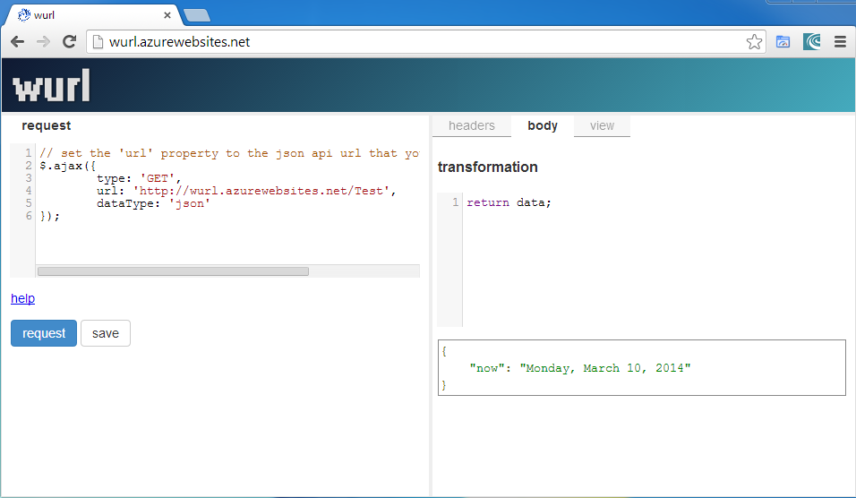
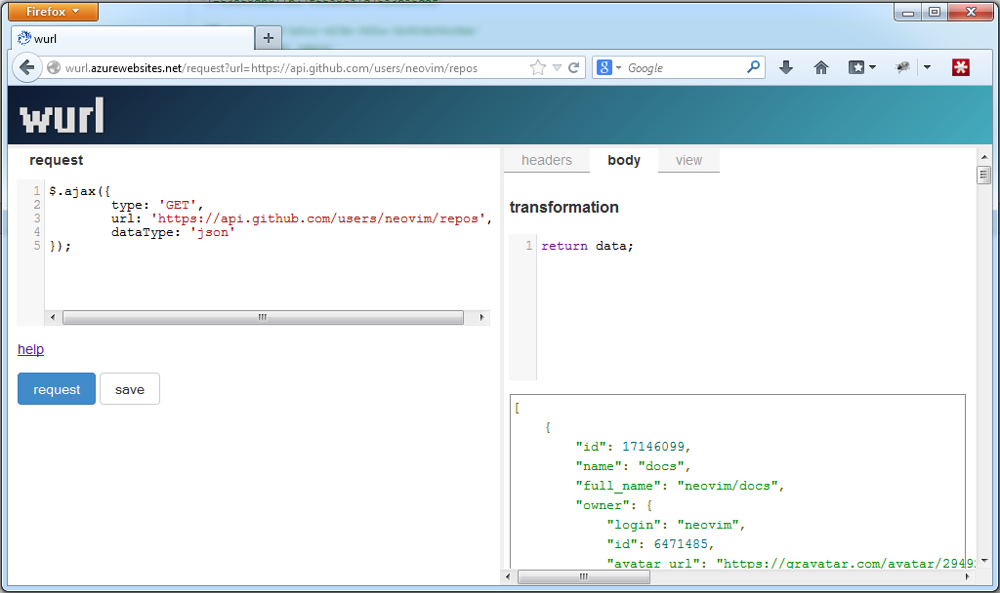

Previously I wrote about Aristotle, my attempt at a usable http test client in the browser. Over the last two months Aristotle has been renamed wurl, received a much improved user interface and many new features.

Here is the short list of improvements:
- new fullscreen tabbed layout
- support for endpoints that don’t support CORS
- realtime filtering of results
- realtime rendering of views
- save templates
- request a template by url (http://wurl.azurewebsites.net/request?url=https://api.github.com/users/neovim/repos)

What’s Missing
wurl is optimised for what I need most, which is querying json apis. Some things not yet implemented are:
- support for xml responses
- identifying and linking urls in responses so that an api can be navigated
- more advanced non-cors requests